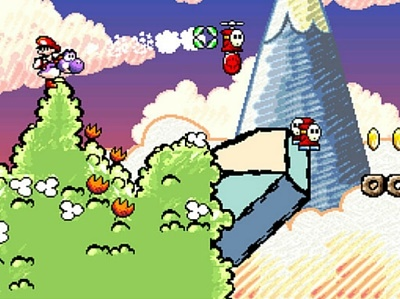
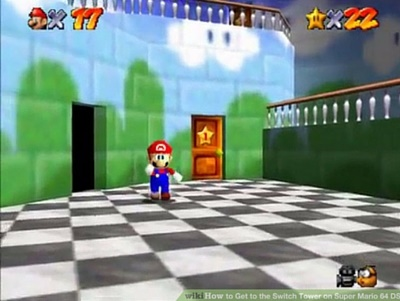
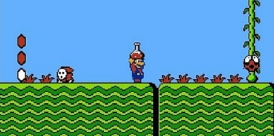
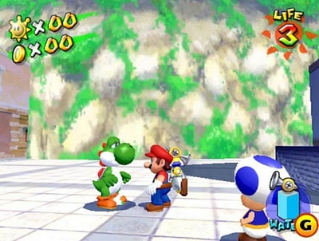

Este juego nos cuenta una historia diferente, aquí los protagonistas son Baby Mario y Yoshi. Baby Luigi es secuestrado por Kayek, Baby Mario cae en la isla Yoshi´s Island y conoce a Yoshi. Juntos se encargan de pasar por los 6 niveles para rescatar a Baby Luigi de las manos de Baby Bowser y Kamek.
Mario hace la transición a la tercera dimensión con esta aventura. Mario es invitado por Peach para celebrar que la paz había vuelto al reino. Al llegar Mario descubre que el reino ha sido invadido por Bowser, y Peach ha sido capturada y encerrada en el castillo. Dentro del castillo Mario debe entrar en cada uno de los cuadros que hay para poder recuperar las estrellas donde tienen retenido a Peach y a los habitantes del reino.
La historia gira en el regreso de Bowser al reino champiñón, pero en esta ocasión no vino solo, ya que es acompañado por sus 7 hijos llamados los Koopalings, Mario es enviado por Peach para que libere a los reyes de cada uno de los 7 niveles que han sido secuestrados. Al lograr liberarlos Mario recibe la noticia que Peach ha sido secuestrada otra vez por Bowser, teniendo que ser Mario otra vez el que la libere de su captor.
Un nuevo episodio de la seria New Súper Mario, aquí volvemos a luchar contra Bowser y los Koopalings, con un nuevo objetivo de conseguir la mayor cantidad de monedas que están distribuidas en todo el reino Champiñón.
Mario y sus amigos están disfrutando de una noche con fuegos artificiales y se encuentran con una tubería la cual tenía un hada. Esta le habla de los planes que tiene Bowser el cual está encerrando en botellas a sus compañeras hadas. Es por esto que Mario y sus compañeros se aventuran por la tubería para tratar de evitar que Bowser lleve a cabo sus planes y lograr salvar a las hadas.